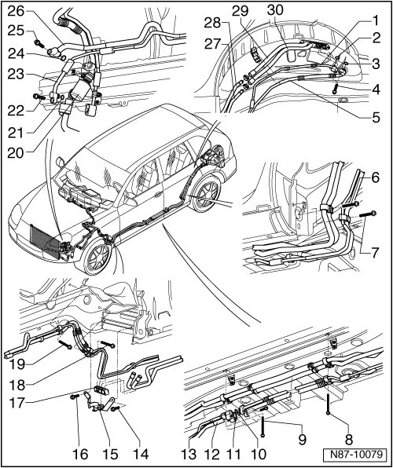

Refrigerant Circuit Components, 4 Zone Second Heating and A/C Unit
Refrigerant Circuit Components, 4 Zone Second Heating and A/C Unit
Special tools, testers and auxiliary items required
• A/C Service Station (VAS 6007A)
• The refrigerant circuit should be flushed with refrigerant R134a if:
• In the event of dirt or other contamination in the refrigerant circuit.
• If vacuum reading is not maintained on evacuating a leak-free refrigerant circuit pressure build-up due to moisture in refrigerant circuit.
• If refrigerant circuit has been left open for longer than normal. For an example following an accident.
• If pressure and temperature measurements in the refrigerant circuit indicate the likelihood of moisture
• In the event of doubt about the amount of refrigerant oil in the circuit.
• The A/C compressor had to be replaced on account of internal damage. For example noise or no output.
• Refrigerant must be extracted before hand using e.g. A/C Service Station (VAS 6007A).
• Environmentally hazardous draining of refrigerant is an offense punishable by law.
• The previously used service stations can still be used --> catalog V.A.G tools.
• Safety measures when working on an evacuated refrigerant circuit. Refer to --> [ Repairing and Handling Refrigerant ] Repairing and Handling Refrigerant.
• To prevent the ingress of dampness all components of the refrigerant circuit which have been opened must be sealed with suitable plugs.
• The color coding of O-rings for the R134a refrigerant circuits has been discontinued. Colored and black O-rings are used.
• Under certain conditions, the dryer cartridge should no longer be replaced each time the refrigerant circuit is opened. Refer to Refrigerant R134a - Servicing General, Technical data.

1 Refrigerant line
• High pressure side
• Below rear left wheel housing liner
2 O-ring
• Replacing
• 9.5 mm; 2.5 mm
3 O-ring
• Replacing
• 13.7 mm; 2.5 mm
4 Cylindrical combi-screw M8x28
• 12 Nm ± 1 Nm
• Quantity: 2
5 Refrigerant line
• Low pressure side
• Below rear left wheel housing liner
6 Cylindrical combi-screw M6x35
• 3.5 Nm ± 0.5 Nm
7 Cylindrical combi-screw M6x35
• 3.5 Nm ± 0.5 Nm
8 Cylindrical combi-screw M6x70
• 3.5 Nm ± 0.5 Nm
9 Cylindrical combi-screw M6x70
• 3, 5 Nm ± 0,5 Nm
10 O-ring
• Replacing
• 13.7 mm; 2.5 mm
11 O-ring
• replacing
• 9.5 mm; 2.5 mm
12 Refrigerant line
• Low pressure side
• at vehicle underbody
13 Refrigerant line
• High pressure side
• At vehicle underbody
14 Screw M6x16
• 8 Nm ± 1.2 Nm
15 Auxiliary component bracket
16 Screw M6x16
• 8 Nm ± 1.2 Nm
17 Spacer
18 Cylindrical combi-screw M6x35
• 3.5 Nm ± 0.5 Nm
19 Cylindrical combi-screw M6x35
• 3.5 Nm ± 0.5 Nm
20 Damper
21 O-ring
• Replacing
• 9.5 mm; 2.5 mm
22 Cylindrical combi-screw M8x28
• 12 Nm ± 1 Nm
23 Refrigerant line
• High pressure side
• Under front left wheel housing liner
24 O-ring
• Replacing
• 13.7 mm; 2.5 mm
25 Cylindrical combi-screw M8x28
• 12 Nm ± 1 Nm
26 Refrigerant line
• Low pressure side
• Under front left wheel housing liner